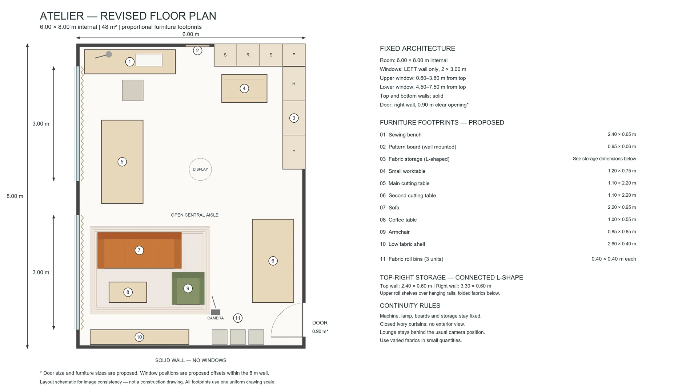
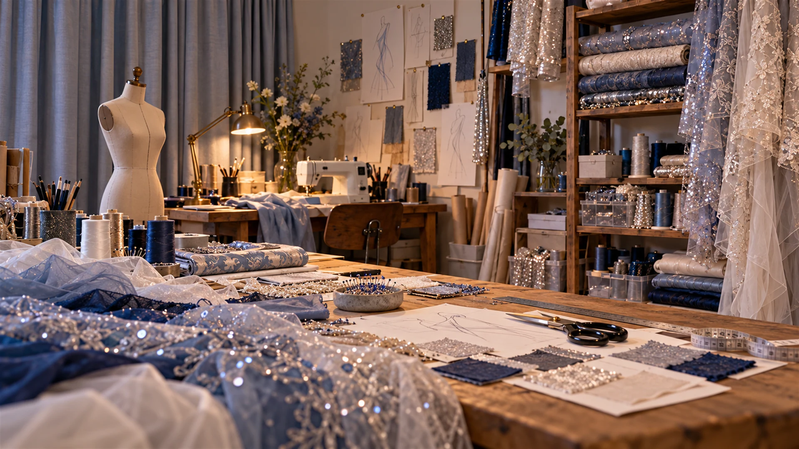

Behind the scenes / My Atelier
Room for
creation.
The design table is where the skyline becomes something I can imagine wearing.
References, colour palettes, material studies and paper designs all have a place here. My Shanghai diary follows those ideas through to the complete look.


On the design table
The Shanghai collection.
I return to the tower’s spiral throughout the design process, comparing the silhouette with the details of the hat, scarf and gloves.
Follow the creation diary ↗